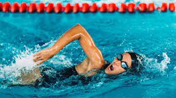
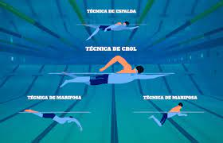

Historia de la natación
La natación es una práctica que ha acompañado a la humanidad desde tiempos remotos, siendo una habilidad vital y una forma de entretenimiento en diversas culturas alrededor del mundo. A lo largo de la historia, la natación ha desempeñado roles diversos, desde ser una habilidad necesaria para la supervivencia y el comercio hasta convertirse en un deporte competitivo y una actividad recreativa. Desde las primeras representaciones en antiguos grabados rupestres hasta la formalización de las primeras competiciones organizadas en el siglo XIX, la natación ha evolucionado significativamente, con la creación de diferentes estilos de nado, la introducción de técnicas modernas y el establecimiento de récords mundiales. Hoy en día, la natación es reconocida como uno de los deportes más completos, beneficiosos para la salud y accesibles para personas de todas las edades y habilidades, con un impacto duradero en la cultura y el bienestar humano.
Técnicas de la natación
La natación comprende una variedad de técnicas fundamentales que permiten a los nadadores desplazarse eficientemente en el agua. Algunas de las técnicas más comunes incluyen el estilo libre, donde los nadadores realizan un movimiento alternado de brazos mientras giran la cabeza para respirar; el estilo espalda, caracterizado por el nado boca arriba con un movimiento de brazos similar al estilo libre; el estilo pecho, reconocido por el movimiento de brazos en forma de círculo acompañado de una patada de rana sincronizada; y el estilo mariposa, que involucra un movimiento ondulante de brazos simultáneo y una patada de delfín. Cada técnica requiere un dominio específico de la coordinación corporal, la respiración y la fuerza para maximizar la eficiencia y la velocidad en el agua. Además, los nadadores pueden emplear variantes y combinaciones de estas técnicas según sus preferencias y objetivos de entrenamiento.
Beneficios para la salud
La natación ofrece una amplia gama de beneficios para la salud tanto física como mental. Desde mejorar la resistencia cardiovascular y fortalecer los músculos hasta aumentar la flexibilidad y promover la pérdida de peso, la natación es un ejercicio completo que trabaja todos los grupos musculares sin ejercer presión sobre las articulaciones. Además, al ser una actividad de bajo impacto, es ideal para personas de todas las edades y niveles de condición física, incluidos aquellos con lesiones o condiciones médicas preexistentes. La natación también tiene efectos positivos en la salud mental, ayudando a reducir el estrés, mejorar el estado de ánimo y promover la relajación. Al sumergirse en el agua, los nadadores experimentan una sensación de calma y bienestar, lo que contribuye a un equilibrio general entre el cuerpo y la mente. En resumen, la natación es una forma altamente beneficiosa de ejercicio que ofrece una combinación única de mejoras físicas y mentales para la salud a largo plazo.